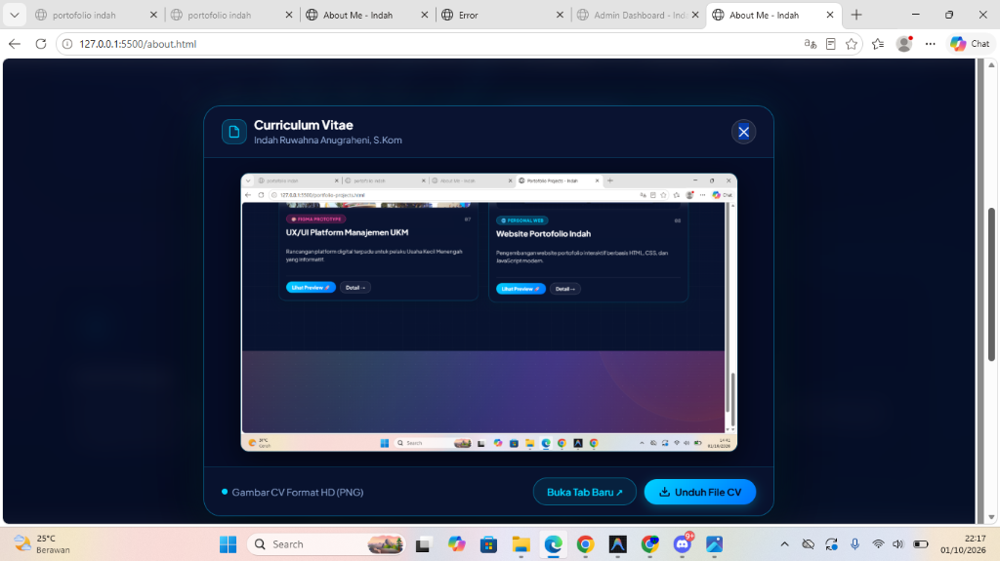

Curriculum Vitae Resmi
INDAH RUWAHNA ANUGRAHENI
SARJANA ILMU KOMPUTER
📞 0852-3374-9306
✉️ indahruwahnaanugraheni@gmail.com
📍 Desa Watulawang Rt 01/Rw01, kec.Pejagoan, Kab.Kebumen
✉️ indahruwahnaanugraheni@gmail.com
📍 Desa Watulawang Rt 01/Rw01, kec.Pejagoan, Kab.Kebumen

TENTANG SAYA
Lulusan Sarjana Ilmu Komputer yang berfokus pada UI/UX Design dan Pengembangan Web, serta memiliki pemahaman kuat dalam pengelolaan bisnis. Berpengalaman merancang antarmuka digital yang intuitif dan estetik berdasarkan riset pengguna, sekaligus menyelaraskannya dengan kebutuhan strategi bisnis. Memiliki kemampuan analisis sistem, pemecahan masalah yang berorientasi pada data, serta kepemimpinan yang siap mendorong pertumbuhan bisnis melalui solusi teknologi yang tepat guna.
PENGALAMAN KERJA
Freelance Florist
(2024 - sekarang)
Freelance Host Live
(2025 - sekarang)
PENGALAMAN PROYEK
- Pengembangan Sistem: Mengembangkan sistem informasi Posyandu berbasis web untuk digitalisasi Penginputan data lansia dan balita
- Membuat Website E-Commerce Florist
- Membuat Website Wisata Goa Asrep
- Membuat Website Portofolio
- Membuat Tampilan ux/ui pada website Menejemen Ukm
- Membuat Website E-Commerce kedai kopi
PENDIDIKAN
- S1 Ilmu Komputer Universitas Putra Bangsa (2024 - Sekarang)
- SMAN 1 Pejagoan (2021 - 2024)
- SMPN 2 Pejagoan (2018 - 2021)
- SDN Watulawang (2012 - 2018)
SERTIFIKASI
- Sertifikasi Juara 1 Praporprof Hockey Kebumen ( 2025 )
- Sertifikasi Juara 1 Porprof Hockey Kebumen ( 2026 )
- Sertifikasi Web Development ( 2026 )
KEAHLIAN
Keahlian Teknis (Hard Skills):
- HTML5, CSS3, JavaScript
- Responsive Web Design & Tailwind / Bootstrap
- Git & GitHub (Version Control)
- UI/UX Design (Figma, Adobe XD)
- Database Management (MySQL / PostgreSQL)
Keahlian Interpersonal (Soft Skills):
- Problem Solving & Analisis Sistem
- Manajemen Waktu & Proyek
- Kerjasama Tim & Komunikasi
🖼️ Dokumen Asli CV (High Resolution Preview)
